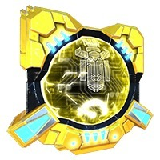
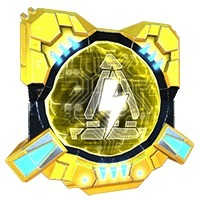

Улучшайте свои здания, оснащая здания этими Силовыми ядрами! (Характеристики указаны для золотых энергетических ядер 1-го уровня).
Важные факты о Prime Core:| Фото | Название | Описание |
|---|---|---|
| Универсальные | ||
| Атака | 4% к урону атаки | |
| Броня | 5% к прочности здания. | |
| Самовосстановление | Восстановление 1,3% прочности в сек. | |
| Импульс Смерти (только для уровня 17,5 Штаба) | При 0 здоровья произойдет ЭМИ взрыв, отключающий цели на большом цчаствке в течении 3,8 сек.. | |
| Авто-пушки | ||
| Разрывные снаряды | Причиняет 54% от основого урона всем целям на небольшом участке. Нет отскока. | |
| Мортиры | ||
| Воспламенитель | Зажигательные взрывы наносят урон в течении 6 сек. +14% к урону атаки. Нет отсока | |
 |
Протокол Нацеливания | Фокусируется на Артиллеристах и Медиках. Дальность атаки увеличивается на 15%. Урон уменьшается до 74%. |
| Ракетные комплексы | ||
| Управляемые ракеты | Ракеты с лазерным наведением по одиночной цели. Причиняет 64% от основного урона. | |
| Лазерные турели | ||
| Зенитный лазер | +36% к дальности атаки и +106% к урону. Может только атаковать цели, находящиеся в полете. | |
 |
Лазерный рикошет | Урон увеличивается на 2%. Лазер отскакивает на вторую цель, причиняя 40% от первого удара лазера. |
| Штаб | ||
| Точечный луч защиты | Причиняет 1000 ед. урона одиночной цели. Может наносить урон воздушным ботам, но нацеливается в первую очередь на Артиллеристов. | |
| Огнемёт | При нападении обжигает ближайших врагов, причиняя 300 ед. урона. | |
| Адаптивная защита | Гештальт и Особые Умения причиняют на 15% меньше урона. | |
| Пучковый лазер | ||
| Кибертронский заряд | Увеличивает радиус на 9%. Чем дольше луч остается на цели, тем больше урона он наносит (до 21% если действие не будет прервано). | |
|  | Замедляющий фотон | Замедляет движение врагов и их скорость атаки на 25%. Радиус атаки увеличивается на 10%. |
| Энерго башни | ||
|  | ЭМИ удар | Оглушает цели на 2 сек. Урон уменьшается до 74%. |
| Шторм | Радиус увеличивается на 50%. Урон уменьшается до 74%. | |
| Стройботы (только для уровня 17,5 Штаба) | ||
| Зона исцеления | восстанавливает 5% прочности каждые 7 сек. | |
| Громоотвод | Защищает ближайшие здания защиты от эффекта ЭМИ. Площадь воздействия увелчивается на 23%. | |
| Разрушитель силового поля | Отключает щиты ближайших врагов. Площадь воздействия увелчивается на 23%. | |